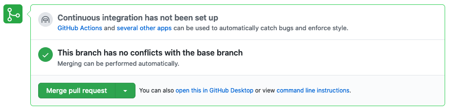

Assignment #5: Communication Log¶
Coding together allows you to work as a team so you can build bigger projects faster. In this assignment, you will practice the common Git commands used when two or more people work on the same project.
You and a partner will take turns modifying some shared code. The two of you will work on your own devices, and you will push and pull your commits to a GitHub repository.
In the Git chapter exercises and project, you worked with both a local and a remote repository. This assignment extends those ideas.
You will practice:
- Forking and cloning a repository from GitHub.
- Adding partners to a shared GitHub Project.
- Quickly trading code in
pushandpullcycles. - Merging two branches in GitHub.
- Resolving merge conflicts (which are not as scary as they sound).
The Story¶
You are going to carry out a conversation between a pilot and their base. Between the two of you, choose who will be the Pilot and who will be the Base. If you have three people in your group, add another pilot role.
Even when it is not your turn to actively code something, watch what your partner is doing. The steps in this activity mimic a real-world Git workflow for a shared project.
Warning
You will be working with branches. It’s very likely your team will accidentally add code to the wrong branch. When this happens, refer to the git stash notes to move your changes to the correct place.
Part A: Project Setup¶
This part needs to happen on ONE person’s computer. Whoever plays the role of Base will git things rolling. However, the Pilot should definitely be looking over Base’s shoulder.
Base: In a web browser, click the link to this GitHub repository. It contains the starter code needed for the assignment.
Base: In the upper right corner of the page, click the Fork button. This adds a copy of the repository to your own GitHub account.
Base: Return to your GitHub home page and check for the
communication-logrepo. Click on its name to view it. The URL will look something likehttps://github.com/your-username/LCHS-Communication-Log-starter. Theyour-usernamepart of the address will show your GitHub name.
Pilot: Thanks for sitting by patiently!
Clone the Project from GitHub¶
Base now has a copy of the repository in their GitHub account. The next step is for each team member to clone that repo onto their personal device.
Pilot and Base: Open Visual Studio code. Use terminal commands to navigate into your
local_practicedirectory. Usepwdto confirm your location.$ pwd /Users/username/Desktop/local_practice
Pilot and Base: In a browser, navigate to Base’s copy of the repo (see step 3 above). Click on the green Code button. Select the
HTTPSoption, then click the Copy button.
Clone a repository from GitHub.¶
Pilot and Base: In the terminal pane of VS Code, enter the
git clone URLcommand. ReplaceURLwith the address you copied from GitHub.
Add a Partner to the Repository¶
All team members should now have a local copy of the repository. However, only Base can make changes to what is stored on GitHub. To fix this, one more setup action is necessary.
Base: In your web browser, go to your
communication-logrepo. Click the Settings button then select the Manage Access option.
Manage access to your repo.¶
Base: Click on the green Invite teams or people button. Enter your partner’s GitHub username and grant them the proper level of access.
Admingives them the ability to delete the repo from your account at any time. TheWriteandMaintainroles allow them to edit the repo but not delete it.When ready, click Add to repository.

Choose who else can modify your GitHub repo.¶
Pilot: You should receive an email invitation to join this repository. View and accept the invitation.
Note
Pilot: If you don’t see the email, check your Spam folder. If you still don’t have the email, login to your GitHub account. Visit the URL for Base’s copy of the repo. You should see an invite notification at the top of the page.
Whew! That was quite the setup experience. Now you’re ready to dive into the main part of the assignment.
Part B: First Message Exchange¶
In this part, you and your partner will take turns adding commits to the shared code. Follow the steps carefully, and try not to get ahead of each other.
Base: In Visual Studio Code, open the
index.htmlfile from the repository. ReplaceEnter the first communication line herewith a short greeting to your Pilot.Base: Save and commit your change with the usual
status/add/commitprocess. Next, send your commit up to GitHub with the command:$ git push origin main
Tip
Remember that you can open a local HTML file in your browser.
If you do this with index.html, then you can track your progress by
refreshing the page after each change.
Pull Base’s Line and Add Another Line¶
Pilot: In Visual Studio Code, open your local version of
index.html. Notice you don’t have the new line of code that Base just added.Pilot: In the terminal, enter this command to pull down the new code from GitHub:
$ git pull origin main
Pilot: In VS Code, you should now see Base’s greeting! Respond to this by adding a new HTML element and some text. Save, commit, and push your changes up to GitHub.
Pull Pilot’s Line and Add Another¶
- Base: Notice that you can’t see what Pilot added yet. Fix this by
entering
git pull origin mainin the terminal. - Base: Now add a third line to the log. Save, commit, and push your change up to GitHub.
Part C: Rinse and Repeat¶
Pilot and Base: You can both play with this for a while! Repeat the cycle a few more times to add to your story.
Tip
The story can go anywhere! Be creative, and try to make each other laugh. If
possible, keep your new lines secret from your partner. That way, the
pull result will be a surprise.
Part D: Create a New Branch¶
This back-and-forth workflow is nice, but it can get in the way. After all, professional developers don’t sit around waiting for their teammates to commit and push a change before starting their own work. Fortunately, Git branches allow partners to work on a project at the same time and at their own pace.
Pilot: While Base is working on the next part of the story, use the terminal to create a new branch called
open-mic.$ git checkout -b open-mic Switched to a new branch 'open-mic' $ git branch main * open-mic
Pilot: In VS Code, open
style.cssand add the following rule:1 2 3 4
body { color: white; background-color: black; }
Pilot: Save and commit your changes. Next, push the new branch up to GitHub with the command:
$ git push origin open-mic
Base: To pull down the new
open-micbranch, enter the command:$ git pull origin open-mic
Note
If you don’t know the name of the new branch, then just enter
git pull. This will pull down all new branches and show you a list of the options.Pilot and Base: If you haven’t already done so, open
index.htmlin a browser to see what it looks like.
Great progress! Now let’s figure out how to merge two branches in GitHub.
Part E: Create a Pull Request In GitHub¶
Pilot and Base: In a browser, navigate to the shared GitHub project page. Click on the dropdown menu just above the list of files to show a list of the branches. Select open-mic.
Pilot: After selecting the
open-micbranch, click the Pull request button.This sets up a request to merge the changes from
open-micinto themainbranch. Add some text in the description box to let Base know what you did and why.Pilot: The branch selected in the base dropdown is the one you want to merge into, while the branch in the compare dropdown is the one you want to merge from.

Open a PR in GitHub.¶
Pilot: Once everything looks good, click the Create pull request button.
{kind=link}
Merge the Pull Request¶
Pilot opened a new Pull Request. Now, Base will take care of it!
Base: In your browser, return to your repo in GitHub. Click on the Pull Requests button. Next, click on the title for the one and only PR.

Click to review the details of the pull request.¶
Base: The page that opens shows the history of all the commits made to the
open-micbranch. When ready, click the green Merge Pull Request button, followed by Confirm Merge.Finally! Merge the pull request.¶
Upon a successful merge, you should see feedback similar to:
Nice! Another successful merge of remote branches.¶
Pilot and Base: The changes from
open-micare now in themainbranch, but only on GitHub. You need to pull the updates to yourmainbranch.$ git checkout main $ git pull origin main
Bonus: Merge Conflicts!¶
When teaming up on a project, things won’t always go smoothly. It’s common for two people to change the same line(s) of code on their separate machines. This prevents Git from being able to automatically finish a merge.
Merge conflicts!¶
Merge conflicts often occur, and they are not a big deal. You learned how to deal with them locally in the Git chapter. Now, you will set up a conflict with the remote repository.
Pilot: In VS Code, switch back to the
mainbranch.Pilot: Change the
style.cssfile. The HTML is looking pretty plain, so spice up thebodystyle rule to look like this:1 2 3 4 5 6 7
body { color: white; background-color: #333; font-size: 150%; font-family: 'Satisfy', cursive; margin: 5em 25%; }
The result:
Satisfying!¶
Save and commit the changes, then push them up to GitHub.
$ git push origin main
Meanwhile…
Base: In VS Code, switch back to the
mainbranch.Base: In your local
style.cssfile, change thebodyrule to look like this:1 2 3 4 5 6 7 8 9
body { color: white; background-color: black; font-family: 'Sacramento', cursive; font-size: 32px; margin-top: 5%; margin-left: 20%; margin-right: 20%; }
Base: Save and commit your changes to
main.
Fix the Merge Conflicts¶
Base: Try to push your changes up to GitHub. You should get an error message. How exciting!
$ git push origin main
To git@github.com:username/communication-log.git
! [rejected] main -> main (fetch first)
error: failed to push some refs to 'git@github.com:username/communication-log.git'
hint: Updates were rejected because the remote contains work that you do
hint: not have locally. This is usually caused by another repository pushing
hint: to the same ref. You may want to first integrate the remote changes
hint: (e.g., 'git pull ...') before pushing again.
There’s a lot of text in the message. However, the main idea is clear:
Updates were rejected because the remote contains work that you do not have
locally.
Somebody (Pilot, in this case), pushed changes to main, and you don’t
have those commits on your computer. To fix this, begin by pulling those
changes down from GitHub:
$ git pull
From github.com:username/communication-log
7d7e42e..0c21659 main -> origin/main
Auto-merging style.css
CONFLICT (content): Merge conflict in style.css
Automatic merge failed; fix conflicts and then commit the result.
Since Pilot and Base both made changes to the same lines of code, Git cannot automatically merge the changes.
Base: Review how to resolve merge conflicts
in VS Code. Follow the same steps to fix the problems in style.css. Once
done, save, commit, and push the final results up to GitHub.
Pilot: Once your partner finishes resolving the merge conflict, be sure to
pull down the new main branch.
More Merge Conflicts!¶
Turn the tables so Pilot can practice resolving a merge conflict.
- Base and Pilot: Decide which file and lines of code you will both change. Make different changes in those places.
- Base: Save, commit, and push your changes up to GitHub.
- Pilot: Try to pull down the changes, and notice that there are merge conflicts. Resolve them, then save, commit, and push the result.
- Base: Pull down the final, resolved code.